4 A List of Heatmaps#
The main feature of ComplexHeatmap and ComplexHeatmap-py is support for concatenating a list of heatmaps and annotations horizontally or vertically so you can visualize associations across multiple data sources in a single aligned layout. In this chapter, we focus mainly on horizontal concatenation (which shares rows across heatmaps and annotations), and then show vertical concatenation at the end. The underlying layout principles are the same in both directions.
For horizontal concatenation, the number of rows must match across
all heatmaps and row annotations. Below we construct three inputs—two
numeric matrices (mat1, mat2) and a 1D
categorical vector (le) that is automatically converted
into a single-column heatmap. Single-column heatmaps are particularly
useful for row-level metadata or summary statistics (for instance, gene
biotypes, log fold changes, or p-values) aligned beside a primary
expression matrix.
import numpy as np
import pandas as pd
import complexheatmap as ch
from complexheatmap import (
Heatmap,
HeatmapAnnotation,
anno_barplot,
anno_points,
anno_text,
colorRamp2,
gpar,
ht_opt,
rowAnnotation,
unit,
v,
)
rng = np.random.default_rng(123)
mat1 = pd.DataFrame(
np.vstack([rng.normal(2, 1, (8, 10)), rng.normal(-2, 1, (4, 10))]),
index=[f"R{i}" for i in range(1, 13)],
columns=[f"C{j}" for j in range(1, 11)],
)
mat2 = pd.DataFrame(
np.vstack([rng.uniform(1, 3, (6, 10)), rng.uniform(0, 2, (6, 10))]),
index=[f"R{i}" for i in range(1, 13)],
columns=[f"C{j}" for j in range(1, 11)],
)
le = rng.choice(["a", "b", "c"], 12)
ind = rng.permutation(12)
mat1 = mat1.iloc[ind]
mat2 = mat2.iloc[ind]
le = le[ind]To concatenate heatmaps horizontally, simply use the +
operator and render with ch.draw():
ht1 = Heatmap(mat1, name="rnorm")
ht2 = Heatmap(mat2, name="runif")
ht3 = Heatmap(le, name="letters")
ch.draw(ht1 + ht2 + ht3)
By default, row dendrograms from the second and subsequent heatmaps are hidden, and all heatmaps inherit the row ordering of the first (main) heatmap. Row names on all heatmaps except the rightmost one are also hidden automatically.
Concatenating heatmaps returns a HeatmapList object. As
explained in Plot the
heatmap, displaying ht_list in an interactive notebook
cell invokes _repr_png_() (calling draw()
internally), while calling ch.draw(ht_list) explicitly lets
you configure global layout options, legend placement, and export
parameters.
ht_list = ht1 + ht2 + ht3
type(ht_list)
# <class 'complexheatmap.heatmap_list.HeatmapList'>You can append additional heatmaps to a HeatmapList,
prepend heatmaps to a HeatmapList, or combine two
HeatmapList objects:
# Code only for demonstration
ht1 + ht_list
ht_list + ht1
ht_list + ht_listNone can also be added to a Heatmap or
HeatmapList, which is convenient when building a heatmap
list dynamically inside a for loop:
# Code only for demonstration
ht_list = None # None + Heatmap(...) creates a HeatmapList
for item in items:
ht_list = ht_list + Heatmap(...)You can also concatenate heatmaps directly with standalone row annotations; see Concatenate with annotations.
4.1 Titles#
A HeatmapList supports global row_title and
column_title settings spanning all concatenated heatmaps.
Specify them in ch.draw():
col_rnorm = colorRamp2([-3, 0, 3], ["green", "white", "red"])
col_runif = colorRamp2([0, 3], ["white", "orange"])
col_letters = {"a": "pink", "b": "purple", "c": "blue"}
ht1 = Heatmap(mat1, name="rnorm", col=col_rnorm, row_title="Heatmap 1", column_title="Heatmap 1")
ht2 = Heatmap(mat2, name="runif", col=col_runif, row_title="Heatmap 2", column_title="Heatmap 2")
ht3 = Heatmap(le, name="letters", col=col_letters)
ht_list = ht1 + ht2 + ht3
ch.draw(
ht_list,
row_title="Three heatmaps, row title",
row_title_gp=gpar(col="red"),
column_title="Three heatmaps, column title",
column_title_gp=gpar(fontsize=16),
)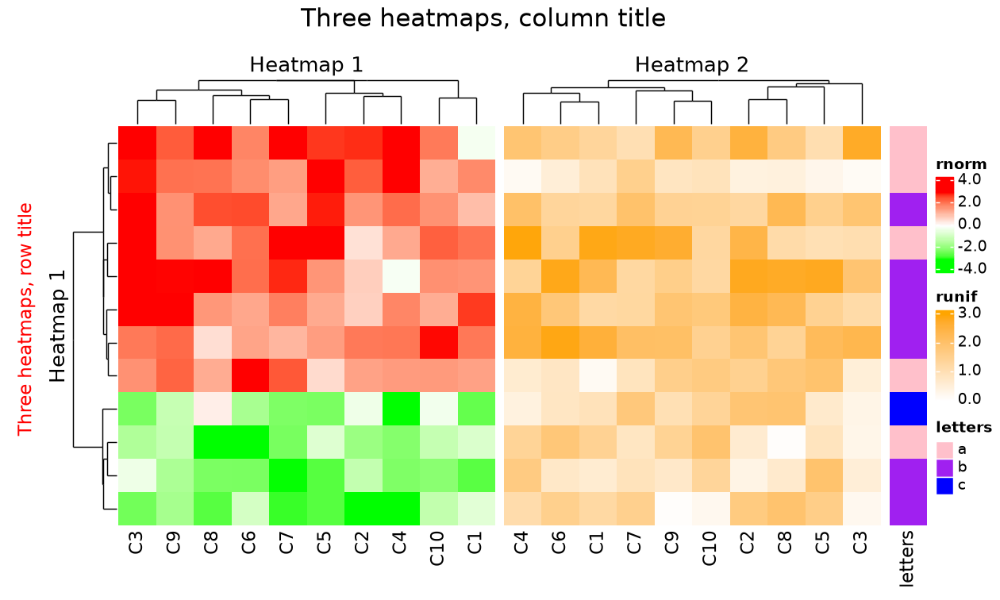
You can use gt_render() to style titles with inline
Markdown/HTML formatting; see Rich text with
gt_render.
4.2 Size of heatmaps#
Individual heatmaps in a horizontal list can be assigned fixed
absolute widths via width (which controls the heatmap body
width):
ht1 = Heatmap(mat1, name="rnorm", col=col_rnorm)
ht2 = Heatmap(mat2, name="runif", col=col_runif, width=unit(4, "cm"))
ht3 = Heatmap(le, name="letters", col=col_letters, width=unit(5, "mm"))
ch.draw(ht1 + ht2 + ht3)
Or set absolute widths for every heatmap in the list:
ht1 = Heatmap(mat1, name="rnorm", col=col_rnorm, width=unit(4, "cm"))
ht2 = Heatmap(mat2, name="runif", col=col_runif, width=unit(6, "cm"))
ht3 = Heatmap(le, name="letters", col=col_letters, width=unit(1, "cm"))
ch.draw(ht1 + ht2 + ht3)
To share available horizontal space proportionally across heatmaps,
use "null" units with unit(..., "null") (note
that in ComplexHeatmap-py, a bare number such as
width=6 is interpreted as 6 mm, so always pass
unit(..., "null") explicitly for relative proportions):
ht1 = Heatmap(mat1, name="rnorm", col=col_rnorm, width=unit(6, "null"))
ht2 = Heatmap(mat2, name="runif", col=col_runif, width=unit(4, "null"))
ht3 = Heatmap(le, name="letters", col=col_letters, width=unit(1, "null"))
ch.draw(ht1 + ht2 + ht3)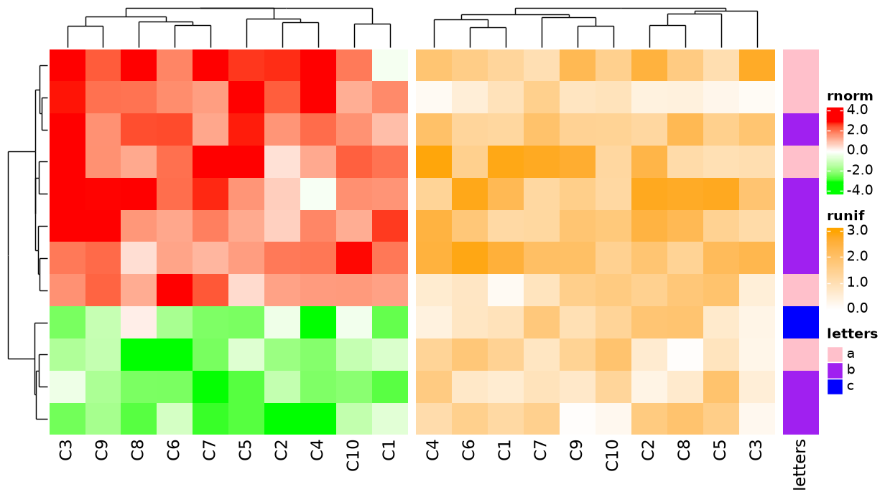
heatmap_width can also control width, measuring the
total width of the heatmap body plus all attached heatmap
components.
4.3 Gap between heatmaps#
ht_gap in ch.draw() controls the horizontal
(or vertical) spacing between consecutive heatmaps or standalone
annotations. It accepts either a single Unit or a vector of
Unit values:
ht1 = Heatmap(mat1, name="rnorm", col=col_rnorm)
ht2 = Heatmap(mat2, name="runif", col=col_runif)
ht3 = Heatmap(le, name="letters", col=col_letters)
ht_list = ht1 + ht2 + ht3
ch.draw(ht_list, ht_gap=unit(1, "cm"))
ch.draw(ht_list, ht_gap=unit([3, 10], "mm"))
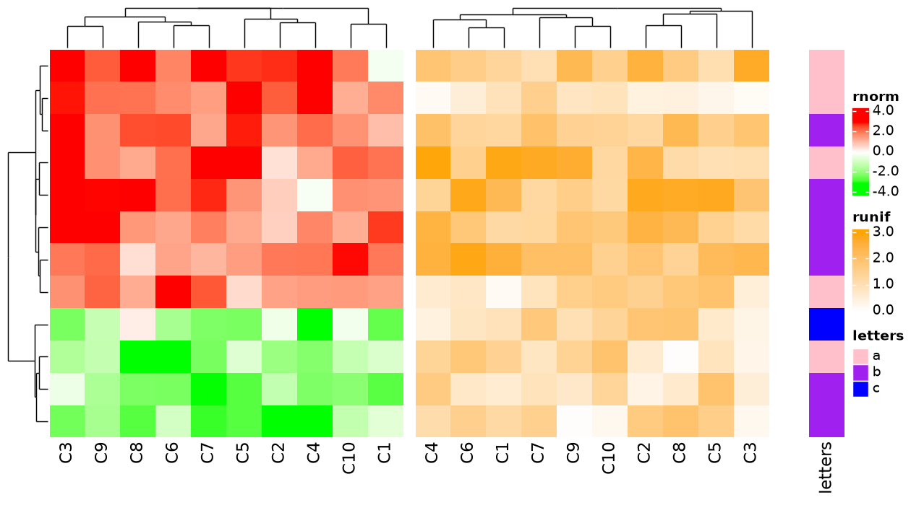
4.4 Automatic adjustment to the main heatmap#
Every HeatmapList designates one heatmap as the
main heatmap, which dictates the global row ordering
and row splitting for all remaining heatmaps and annotations. For
non-main heatmaps, ComplexHeatmap-py applies the
following automatic adjustments:
- Row clustering is disabled and rows follow the ordering of the main heatmap.
- Individual
row_titlelabels are suppressed. - If the main heatmap is split by rows, all other heatmaps and row annotations are split identically.
- All heatmaps share the body height of the main heatmap.
By default, the first heatmap in the list is selected as the main
heatmap. In the example below, ht2 comes first, so
row_km=2 on ht1 is ignored:
ht1 = Heatmap(mat1, name="rnorm", col=col_rnorm, row_km=2)
ht2 = Heatmap(mat2, name="runif", col=col_runif)
ht3 = Heatmap(le, name="letters", col=col_letters)
ch.draw(ht2 + ht1 + ht3)
You can designate any heatmap as the main heatmap via
main_heatmap in ch.draw(), passing either its
0-based position among heatmaps or its name:
ht_list = ht2 + ht1 + ht3
ch.draw(ht_list, main_heatmap="rnorm")
By default, the main heatmap’s row dendrogram and row slice titles
stay attached directly beside the main heatmap so it is visually clear
which matrix drives clustering and splitting. You can relocate them to
the outer edges of the heatmap list using row_dend_side and
row_sub_title_side in ch.draw():
ch.draw(ht_list, main_heatmap="rnorm", row_dend_side="right", row_sub_title_side="left")
Similarly, if row clustering is disabled on the main heatmap
(cluster_rows=False), none of the remaining heatmaps are
clustered:
ht1 = Heatmap(mat1, name="rnorm", col=col_rnorm, cluster_rows=False)
ch.draw(ht1 + ht2 + ht3)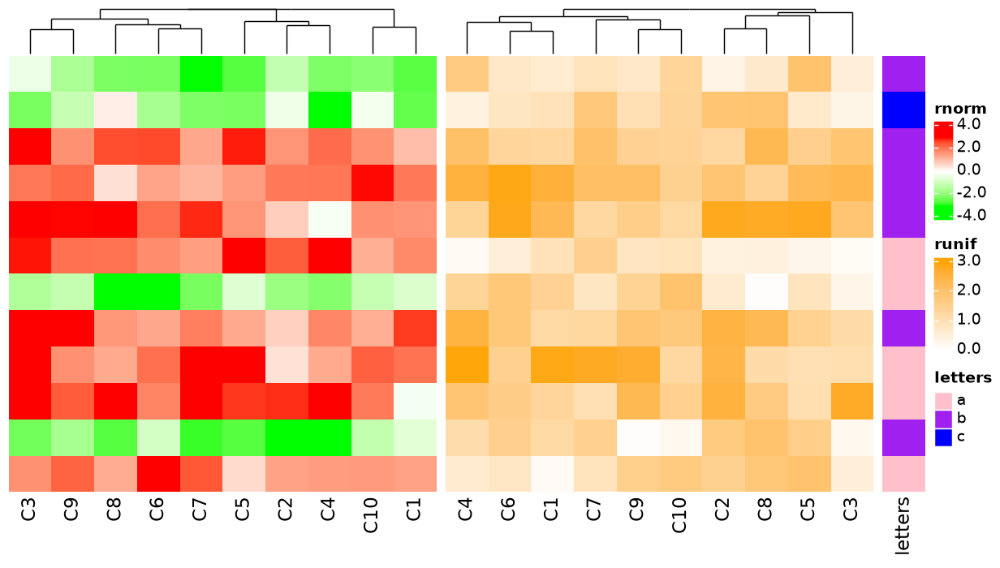
By default, row names between adjacent heatmaps are hidden. Set
auto_adjust=False in ch.draw() to keep
intermediate row names visible:
ht1 = Heatmap(mat1, name="rnorm", col=col_rnorm)
ch.draw(ht1 + ht2 + ht3, auto_adjust=False)
4.5 Control main heatmap in draw() function#
Row-layout settings can be passed directly to ch.draw(),
overriding the corresponding arguments defined on the main
Heatmap().
Parameters controlling row ordering:
cluster_rowsclustering_distance_rowsclustering_method_rowsrow_dend_widthshow_row_dendrow_dend_reorderrow_dend_gprow_order
Parameters controlling row slicing:
row_gaprow_kmrow_km_repeatsrow_split
Parameters controlling height:
heightheatmap_height
In the example below, row_km=2 and
cluster_rows=False on ht1 are overridden in
ch.draw():
ht1 = Heatmap(mat1, name="rnorm", col=col_rnorm, row_km=2, cluster_rows=False)
ht2 = Heatmap(mat2, name="runif", col=col_runif)
ht3 = Heatmap(le, name="letters", col=col_letters)
ht_list = ht1 + ht2 + ht3
ch.draw(ht_list, row_km=1, row_split=le, cluster_rows=True)
4.6 Annotations as components are adjusted#
When heatmaps in a horizontal list carry top_annotation
or bottom_annotation tracks of differing heights,
ComplexHeatmap-py aligns the heatmap bodies by
automatically adjusting complex annotations and/or column
dendrograms.
Simple annotations retain their fixed size by default
(simple_anno_size), so if only one heatmap has a simple top
annotation, the column dendrograms of the remaining heatmaps stretch
vertically to match the total top height:
ha1 = HeatmapAnnotation(foo1=np.arange(1, 11), annotation_name_side="left")
ht1 = Heatmap(mat1, name="rnorm", col=col_rnorm, top_annotation=ha1)
ch.draw(ht1 + ht2 + ht3)
When multiple heatmaps carry complex annotations, the complex
annotation heights are scaled so all top_annotation regions
have equal height while simple annotations keep their configured
height:
ha1 = HeatmapAnnotation(foo1=np.arange(1, 11), bar1=anno_points(np.arange(1, 11)), annotation_name_side="left")
ha2 = HeatmapAnnotation(bar2=anno_barplot(np.arange(1, 11)))
ht1 = Heatmap(mat1, name="rnorm", col=col_rnorm, top_annotation=ha1)
ht2 = Heatmap(mat2, name="runif", col=col_runif, top_annotation=ha2)
ch.draw(ht1 + ht2 + ht3, ht_gap=unit([6, 2], "mm"))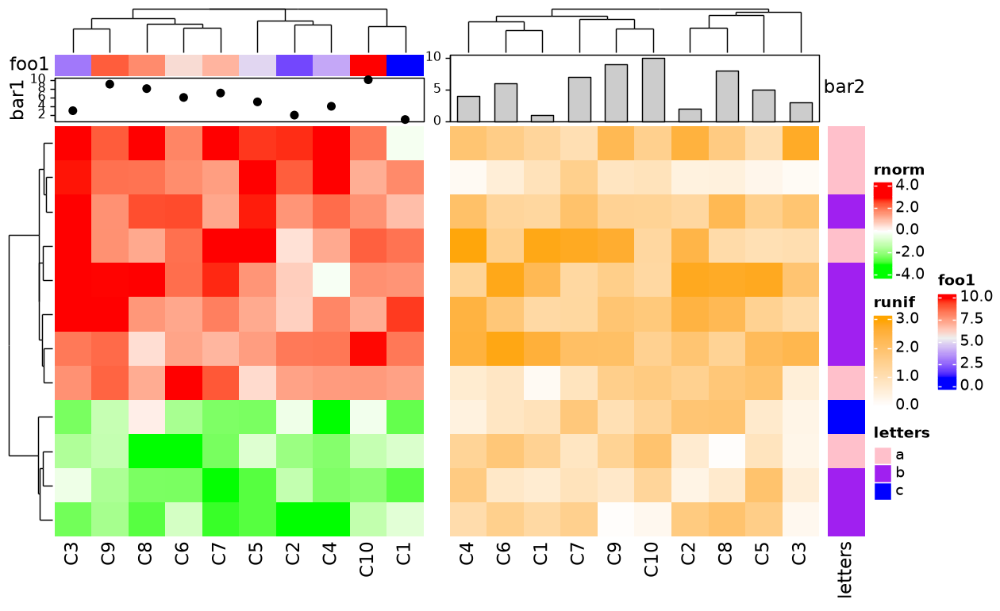
If the first heatmap has only a simple annotation while the second has a tall complex annotation, the first heatmap’s column dendrogram expands to match the taller annotation:
ha1 = HeatmapAnnotation(foo1=np.arange(1, 11), annotation_name_side="left")
ha2 = HeatmapAnnotation(bar2=anno_barplot(np.arange(1, 11), height=unit(2, "cm")))
ht1 = Heatmap(mat1, name="rnorm", col=col_rnorm, top_annotation=ha1)
ht2 = Heatmap(mat2, name="runif", col=col_runif, top_annotation=ha2)
ch.draw(ht1 + ht2 + ht3, ht_gap=unit([6, 2], "mm"))
When two heatmaps have unequal numbers of simple annotations, the
dendrogram of the shorter stack adjusts automatically (unless
simple_anno_size_adjust=True is set in each
HeatmapAnnotation()):
ha2 = HeatmapAnnotation(bar2=pd.DataFrame({"b1": np.arange(1, 11), "b2": np.arange(11, 21), "b3": np.arange(21, 31)}))
ht1 = Heatmap(mat1, name="rnorm", col=col_rnorm, top_annotation=ha1)
ht2 = Heatmap(mat2, name="runif", col=col_runif, top_annotation=ha2)
ch.draw(ht1 + ht2 + ht3)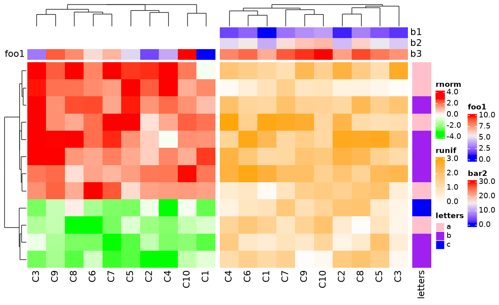
For bottom annotations, heatmaps without a
bottom_annotation align their column names directly beneath
their heatmap bodies:
ha1 = HeatmapAnnotation(foo1=np.arange(1, 11), bar1=anno_points(np.arange(1, 11)), annotation_name_side="left")
ht1 = Heatmap(mat1, name="rnorm", col=col_rnorm, bottom_annotation=ha1)
ch.draw(ht1 + ht2 + ht3)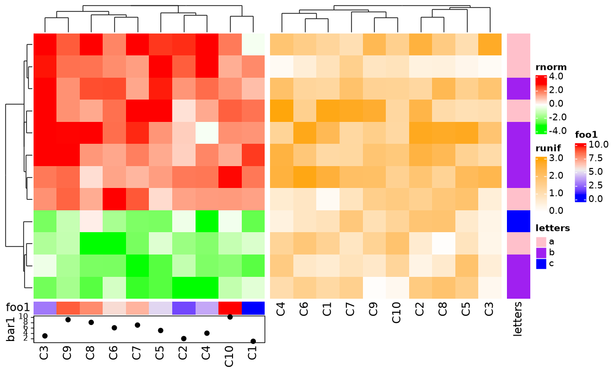
4.7 Concatenate with annotations#
Independent rowAnnotation objects can be concatenated
directly onto a horizontal HeatmapList with
+:
ha = rowAnnotation(foo=np.arange(1, 13), bar=anno_barplot(np.arange(1, 13), width=unit(4, "cm")))
ht1 = Heatmap(mat1, name="rnorm", col=col_rnorm, row_km=2)
ch.draw(ht1 + ha)
Multiple tracks can be defined in separate
rowAnnotation() calls:
ch.draw(
ht1
+ rowAnnotation(foo=np.arange(1, 13))
+ rowAnnotation(bar=anno_barplot(np.arange(1, 13), width=unit(4, "cm")))
)
Notice that when row annotations are concatenated with
+, the heatmap’s built-in row names are suppressed between
components. To display row names on the right, either:
- Attach the annotation via
right_annotation=ha(orattach_annotation(ht1, ha, side="right")) on the last heatmap:
ch.draw(Heatmap(mat1, name="rnorm", col=col_rnorm, row_km=2, right_annotation=ha))
- Or append an explicit
anno_text()track:
ch.draw(ht1 + ha + rowAnnotation(rn=anno_text(mat1.index, location=unit(0, "npc"), just="left")))
Heatmaps and rowAnnotation objects can be interleaved in
any order:
ch.draw(
rowAnnotation(foo=np.arange(1, 13))
+ ht1
+ rowAnnotation(bar=anno_barplot(np.arange(1, 13), width=unit(4, "cm")))
+ Heatmap(mat2, name="runif", col=col_runif)
)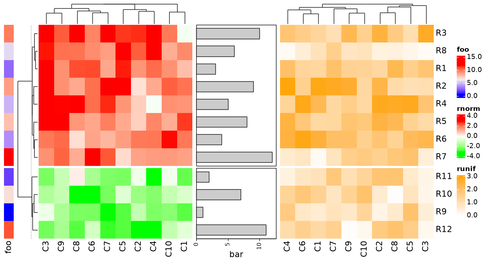
The difference between annotations attached as heatmap components
(left_annotation / right_annotation) and
standalone concatenated annotations is highlighted further in Vertical concatenation.
4.8 Concatenate only the annotations#
Row annotations can be concatenated without any heatmap:
anno_list = rowAnnotation(foo=np.arange(1, 13)) + rowAnnotation(bar=anno_barplot(np.arange(1, 13), width=unit(4, "cm")))
ch.draw(anno_list)
To wrap a single rowAnnotation into a
HeatmapList, concatenate it with None:
ch.draw(rowAnnotation(bar=anno_barplot(np.arange(1, 13), width=unit(4, "cm"))) + None)
When you want to split a standalone list of row annotations with
row_split (while keeping legends and slice gaps aligned
cleanly), prepend a zero-column anchor Heatmap with
clustering disabled:
ch.draw(
Heatmap(np.empty((12, 0)), cluster_rows=False, row_dend_reorder=False, show_heatmap_legend=False, width=unit(0, "mm"))
+ anno_list,
row_split=np.repeat(["A", "B"], 6),
)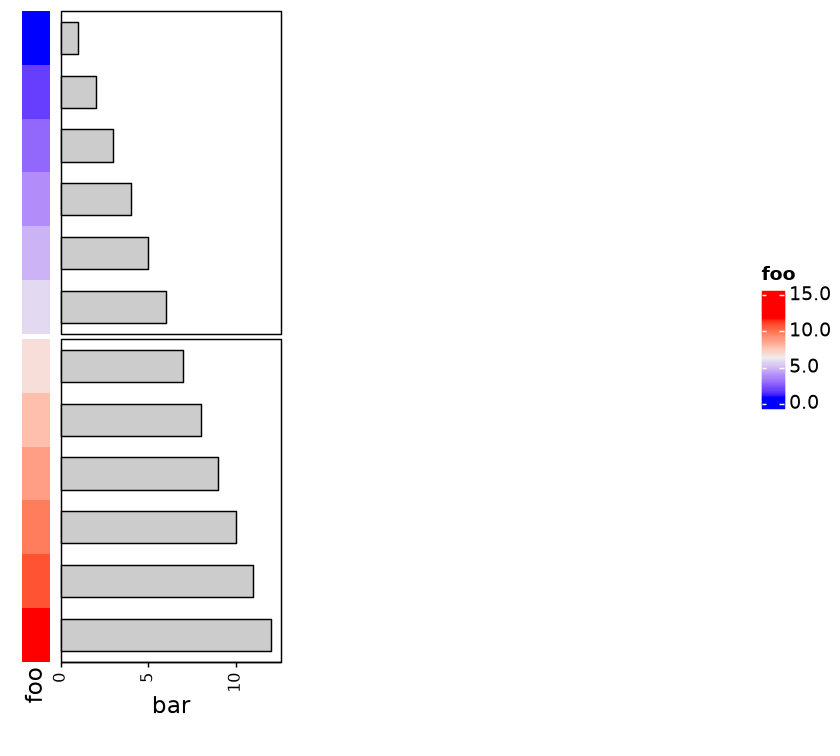
See Stacked summary plot for a real multi-annotation dashboard built using this pattern.
4.9 Vertical concatenation#
Heatmaps and column annotations can be stacked vertically using the
%v% infix operator
(from complexheatmap import v) or Python’s division
operator (ht1 / ht2). Every rule from horizontal
concatenation carries over symmetrically—columns are aligned across
items, and column_km / column_split on the
main heatmap governs all vertically concatenated heatmaps and column
annotations:
mat1t = mat1.T
mat2t = mat2.T
ht1 = Heatmap(mat1t, name="rnorm", col=col_rnorm, row_title="rnorm")
ht2 = Heatmap(mat2t, name="runif", col=col_runif, row_title="runif")
ht3 = Heatmap(pd.DataFrame([le], index=["letters"]), name="letters", col=col_letters)
ht_list = ht1 %v% ht2 %v% ht3
ch.draw(ht_list)
ch.draw(ht_list, column_km=2)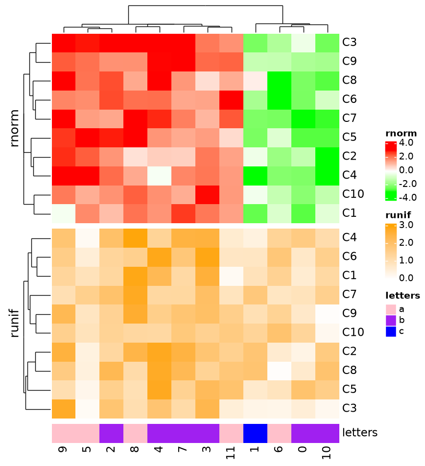

Column annotations (HeatmapAnnotation()) can be inserted
anywhere in a vertical %v% stack:
ha = HeatmapAnnotation(foo=anno_barplot(np.arange(1, 13), height=unit(2, "cm")))
ch.draw(ht1 %v% ha %v% ht2 %v% ht3, column_km=2)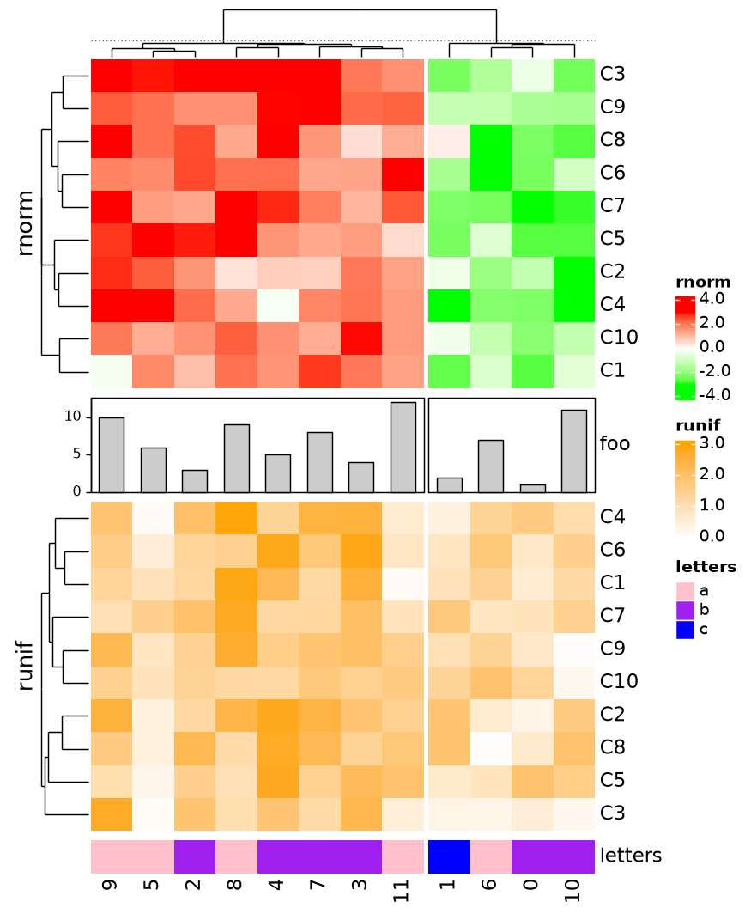
Individual heatmaps in a vertical stack can still carry independent row k-means splits or row clustering:
ht1 = Heatmap(mat1t, name="rnorm", col=col_rnorm, row_km=2)
ht2 = Heatmap(mat2t, name="runif", col=col_runif, row_km=2)
ch.draw(ht1 %v% ha %v% ht2 %v% ht3, column_km=2)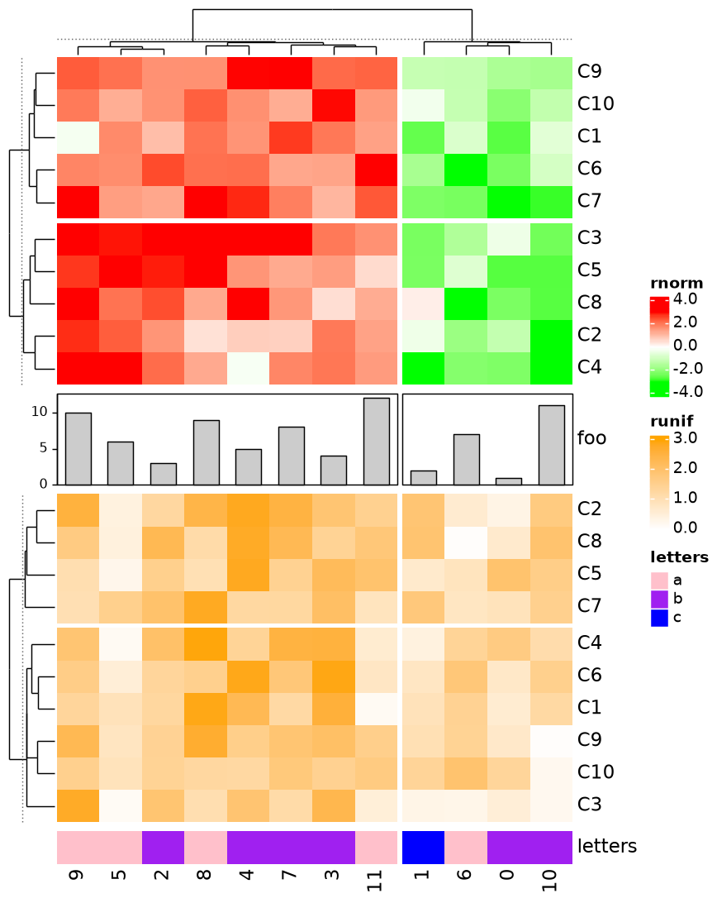
To add row annotations to heatmaps inside a vertical stack, attach
them as left_annotation or right_annotation
components on each Heatmap.
ComplexHeatmap-py aligns their widths automatically
across the vertical stack—providing the standard way to expand a layout
both horizontally and vertically at once:
ht1 = Heatmap(
mat1t,
name="rnorm",
col=col_rnorm,
row_km=2,
left_annotation=rowAnnotation(foo1=np.arange(1, 11), bar1=anno_barplot(np.arange(1, 11))),
)
ha = HeatmapAnnotation(foo=anno_barplot(np.arange(1, 13), height=unit(2, "cm"), axis_param={"side": "right"}))
ht2 = Heatmap(mat2t, name="runif", col=col_runif, row_km=2, left_annotation=rowAnnotation(foo2=np.arange(1, 11)))
ht_list = ht1 %v% ha %v% ht2 %v% ht3
ch.draw(ht_list, column_km=2)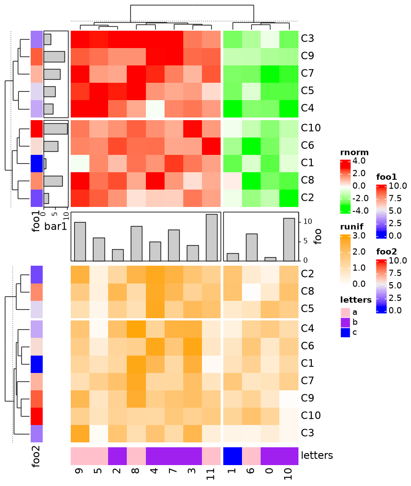
4.10 Subset the heatmap list#
Just like subsetting a single Heatmap (Subset a heatmap), an
uninitialized HeatmapList supports 0-based
indexing via ht_list[rows, cols]. For a horizontal
HeatmapList, the row selector subsets rows across all
heatmaps and annotations, while the column selector picks a subset of
heatmaps or standalone annotations by name or index (for a vertical
HeatmapList, the roles reverse):
ht1 = Heatmap(
mat1,
name="rnorm",
col=col_rnorm,
left_annotation=rowAnnotation(foo1=np.arange(1, 13), bar1=anno_points(np.arange(1, 13))),
)
ht2 = Heatmap(mat2, name="runif", col=col_runif)
ha = rowAnnotation(foo2=anno_barplot(np.arange(1, 13)), bar2=np.arange(12, 0, -1))
ht_list = ht1 + ht2 + ha
ht_list.names
# ['rnorm', 'runif', 'heatmap_annotation_5']
ch.draw(ht_list[:6, ["rnorm", "bar2"]])
Notice that foo1 and bar1 belong internally
to ht1 ("rnorm"), so they follow
"rnorm" automatically and cannot be selected independently,
whereas foo2 and bar2 belong to the standalone
rowAnnotation (ha) and can be selected
individually by name ("bar2").
4.11 Plot the heatmap list#
As in Plot the
heatmap, evaluating a HeatmapList expression in Jupyter
renders its _repr_png_() preview automatically, while
inside scripts, loops, or multi-statement blocks you should call
ch.draw(ht_list, ...) (or ht_list.draw(...))
explicitly:
# Code only for demonstration
drawn = ch.draw(ht_list, ...)4.12 Get orders and dendrograms#
Use row_order(), column_order(),
row_dend(), and column_dend() on the drawn
HeatmapList returned by ch.draw() to inspect
the 0-based display ordering and
Dendrogram objects:
from complexheatmap import column_order, row_order
ht1 = Heatmap(mat1, name="rnorm", col=col_rnorm)
ht2 = Heatmap(mat2, name="runif", col=col_runif)
ht_list = ch.draw(ht1 + ht2)
row_order(ht_list)
# [9, 5, 2, 8, 4, 7, 3, 11, 1, 6, 0, 10]
column_order(ht_list)
# {'rnorm': [2, 8, 7, 5, 6, 4, 1, 3, 9, 0], 'runif': [3, 5, 0, 6, 8, 9, 1, 7, 4, 2]}When rows or columns are split, the corresponding return values become nested lists (one list per slice):
ht1 = Heatmap(mat1, name="rnorm", col=col_rnorm)
ht2 = Heatmap(mat2, name="runif", col=col_runif, column_km=2)
ht_list = ch.draw(ht1 + ht2, row_km=2)
row_order(ht_list)
# [[9, 5, 2, 8, 4, 7, 3, 11], [1, 6, 0, 10]]
column_order(ht_list)
# {'rnorm': [2, 8, 7, 5, 6, 4, 1, 3, 9, 0], 'runif': [[1, 3, 8, 6, 0], [7, 5, 4, 9, 2]]}Pass name= to column_order() (or
column_dend()) to extract the result for a single
heatmap:
column_order(ht_list, name="runif")
# [[1, 3, 8, 6, 0], [7, 5, 4, 9, 2]]The exact same functions work for row_dend() /
column_dend() and for vertical %v% heatmap
lists.
4.13 Change parameters globally#
ht_opt manages global defaults applied across all
heatmaps, annotations, legends, and component paddings. Always reset
options afterward with ht_opt(RESET=True)—or better yet,
scope temporary overrides safely with Python’s
with ht_opt.local(...): context manager.
Print ht_opt to inspect every option and its default
value:
print(ht_opt) Option Value
-----------------------------:--------------------------------
heatmap_row_names_gp None
heatmap_column_names_gp None
heatmap_row_title_gp None
heatmap_column_title_gp None
legend_title_gp None
legend_title_position None
legend_labels_gp None
legend_grid_height None
legend_grid_width None
legend_border None
legend_gap unit([4mm, 4mm])
merge_legends False
heatmap_border None
annotation_border None
fast_hclust False
show_parent_dend_line True
kmeans_seed None
verbose False
message True
show_vp False
simple_anno_size 5mm
DENDROGRAM_PADDING 0.5mm
DIMNAME_PADDING 1mm
TITLE_PADDING None
COLUMN_ANNO_PADDING 1mm
ROW_ANNO_PADDING 1mm
HEATMAP_LEGEND_PADDING 2mm
ANNOTATION_LEGEND_PADDING 2mm
PAGE_PADDING None
ht_gap None
save_last False
validate_names True
raster_temp_image_max_width 30000
raster_temp_image_max_height 30000
COLOR ['blue', '#EEEEEE', 'red']Options group into five categories:
- Heatmaps:
heatmap_row_names_gp,heatmap_column_names_gp,heatmap_row_title_gp,heatmap_column_title_gp,heatmap_border. - Legends:
legend_title_gp,legend_title_position,legend_labels_gp,legend_grid_width,legend_grid_height,legend_border,legend_gap,merge_legends. - Annotations:
annotation_border,simple_anno_size. - Component padding:
DENDROGRAM_PADDING,DIMNAME_PADDING,TITLE_PADDING,COLUMN_ANNO_PADDING,ROW_ANNO_PADDING,HEATMAP_LEGEND_PADDING,ANNOTATION_LEGEND_PADDING,PAGE_PADDING. - Execution & defaults:
fast_hclust,show_parent_dend_line,kmeans_seed,ht_gap,validate_names,COLOR.
Options can be read or updated via function call or attribute access,
and reset with RESET=True:
# Code only for demonstration
ht_opt("heatmap_row_names_gp")
ht_opt.heatmap_row_names_gp
ht_opt(heatmap_row_names_gp=gpar(fontsize=8))
ht_opt.heatmap_row_names_gp = gpar(fontsize=8)
ht_opt(RESET=True)Using with ht_opt.local(...): applies options to a
specific block and automatically restores previous settings
afterward:
with ht_opt.local(
heatmap_column_names_gp=gpar(fontface="italic"),
heatmap_column_title_gp=gpar(fontsize=10),
legend_border="black",
heatmap_border=True,
annotation_border=True,
):
ht1 = Heatmap(mat1, name="ht1", column_title="Heatmap 1", top_annotation=HeatmapAnnotation(foo=np.arange(1, 11)))
ht2 = Heatmap(mat2, name="ht2", column_title="Heatmap 2", top_annotation=HeatmapAnnotation(bar=np.arange(1, 11)))
ch.draw(ht1 + ht2)
4.14 Adjust blank space caused by annotations#
Because heatmap annotations carry annotation names and data axes outside the column bounds, ComplexHeatmap-py reserves space for those overhangs in the overall layout. Depending on your plot dimensions, this can create extra blank space on the left or right of the heatmap body—for example, when a matrix has no row names on the right or no row dendrogram on the left.
In R ComplexHeatmap,
adjust_annotation_extension toggles whether annotation
overhangs reserve layout margin. In ComplexHeatmap-py,
annotation overhang extension is applied automatically when building the
HeatmapList layout, and a clean way to eliminate unwanted
right-side blank space or align a row_title with an
annotation axis is to move the annotation name to the opposite side
(annotation_name_side="left"):
m = rng.standard_normal((10, 10))
ht_right = Heatmap(
m,
name="mat",
top_annotation=HeatmapAnnotation(foo=anno_points(np.arange(1, 11))),
show_row_dend=False,
)
ht_left = Heatmap(
m,
name="mat",
top_annotation=HeatmapAnnotation(foo=anno_points(np.arange(1, 11)), annotation_name_side="left"),
row_title="fooooooooooo",
show_row_dend=False,
)
ch.draw(ht_right, row_title="fooooooooooo")
ch.draw(ht_left)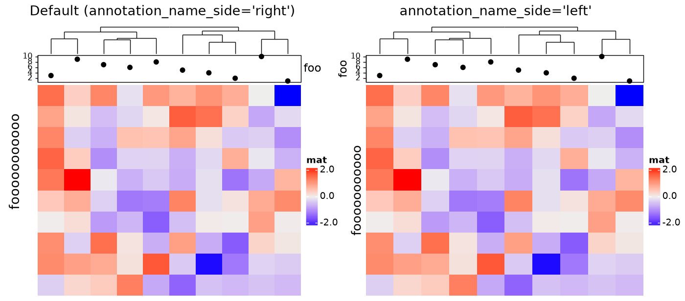
Automatic annotation extension is especially important on very short heatmaps, where annotation axes and titles would otherwise be clipped at the top or bottom without reserving space:
ch.draw(ht_right, row_title="fooooooooooo", column_title="Short heatmap with automatic annotation extension")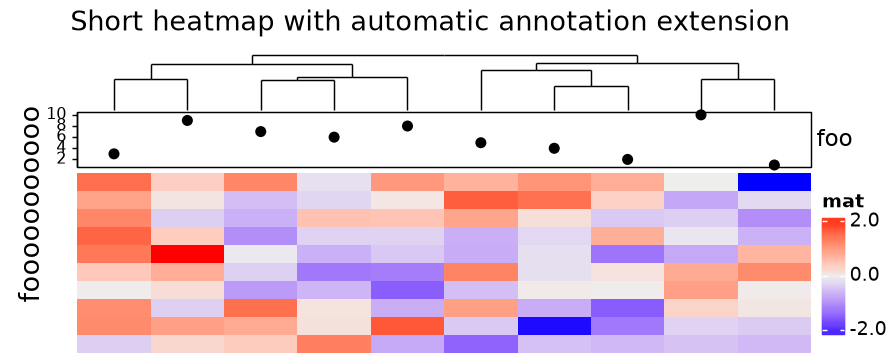
4.15 Manually increase space around the plot#
If long labels or rotated titles still extend past the figure
margins, use padding in ch.draw() (or
ht_opt.PAGE_PADDING) to add explicit blank margins around
all four sides. padding takes a 4-element Unit
vector ordered [bottom, left, top, right]:
rnames = [f"R{i}" for i in range(1, 11)]
rnames[0] = "a long long long long long row name"
m2 = pd.DataFrame(m, index=rnames, columns=[f"C{j}" for j in range(1, 11)])
ht = Heatmap(m2, name="mat", row_names_side="left", show_row_dend=False)
ch.draw(ht)
ch.draw(ht, padding=unit([2, 20, 2, 2], "mm")) # extra 20 mm on the left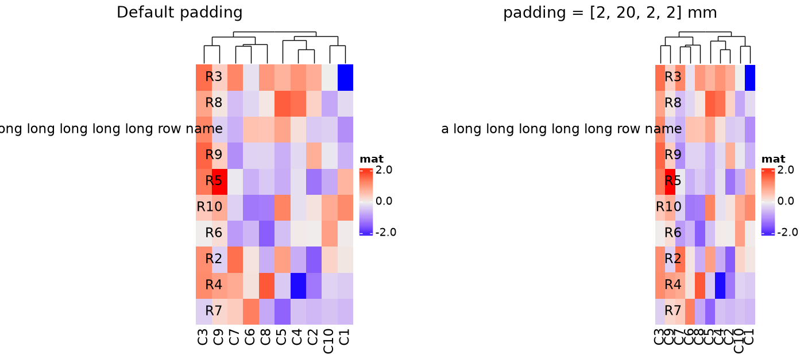